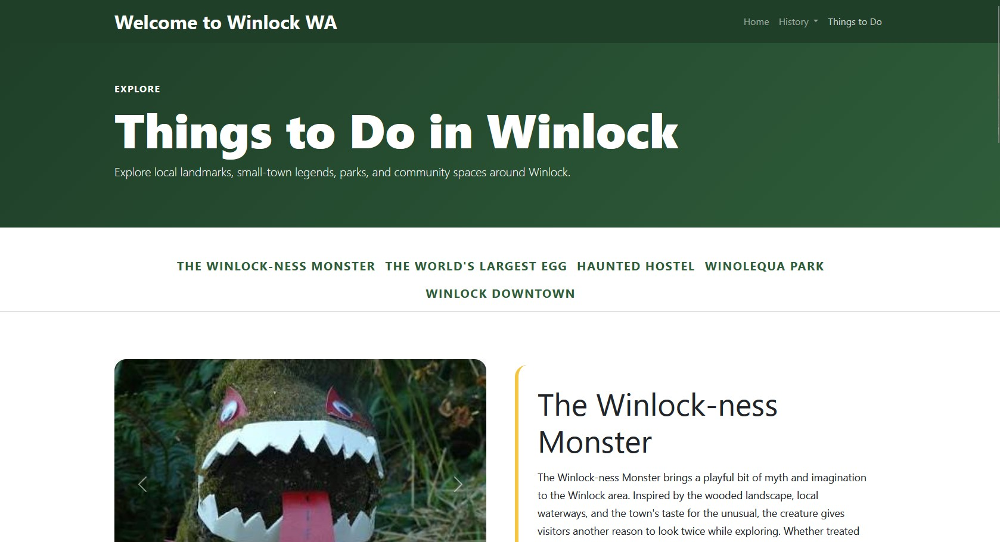

Final Bootcamp Project
Winlock Tourism Website
A full-stack, database-backed travelogue for Winlock, Washington, built from a reusable content system
- Created reusable Angular components and route-driven pages
- Built Express endpoints backed by MongoDB Atlas and Mongoose
- A great learning experience in a simulated Scrum environment
AngularTypeScriptNode.jsExpressMongoDB